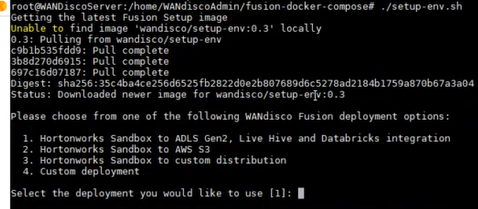

WANdisco Fusion Set up and Installation Guide #
Overview #
This quickstart will help in setting up the Azure Linux Virtual Machine (VM) suitable for the WANdisco Fusion installation. Below will be covered:
-
Azure Linux Virtual Machine (VM) creation using Azure Portal
-
Configuration set up and Installation guide for WANdisco Fusion
Prerequisites #
-
Active Azure Subscription
-
Azure Data Lake Storage Gen1
-
Azure Data Lake Storage Gen2. For more details please refer to create azure storage account
-
Windows SSH client like Putty, Git for Windows, Cygwin, MobaXterm
Azure Linux Virtual Machine Creation #
-
Go To Azure Portal Home page
-
Click on + Create a resource
-
Search for Ubuntu Server. Select Ubuntu Server 16.04 LTS.
-
Click on Create
-
In the Basics tab, under Project details, make sure the correct subscription is selected and then choose existing Resource group or Create new one.
-
Under Instance details, type any name for the Virtual machine name, choose East US for your Region, and choose Ubuntu 18.04 LTS for Image. Leave the other defaults.
-
Under Administrator account, select SSH public key or password. Fill the details as required. Under Inbound port rules > Public inbound ports, choose Allow selected ports and then select SSH (22) and HTTP (80) from the drop-down.
-
Leave the defaults under Disks, Networking, Management . In the Advanced tab under Cloud init text field, paste the cloud init content.
-
Leave the remaining defaults and then select the Review + create button at the bottom of the page.
-
On the Create a virtual machine page, you can see the details about the VM you are about to create. When you are ready, select Create.
Virtual Machine Connection set up #
Create an SSH connection with the VM #
-
Select the Connect button on the overview page for your VM.

-
Go to Networking under Settings.
-
Click on Add inbound port rule.
-
Select Source as IP addresses from the drop down. Provide your source ip address in Source IP addresses/CIDR ranges. Provide list of port ranges as 22,8081,8083,8084 in the Destination port ranges field. Choose TCP under Protocol. Give any Name
-
Click on Add button.
Connect to VM #
To connect to the VM created above, you need a secure shell protocol (SSH) client like Putty, Git for Windows, Cygwin, MobaXterm
-
Start the VM if it isn’t already running. Under Overview configure the DNSname dynamic and set DNS name.
The above DNS name can be used to login into SSH client.
-
Open the SSH client (Putty , Git , Cygwin, MobaXterm).
:bulb: Note : Here we will be using MobaXterm.
Go to Session —> Click on SSH
-
Provide the DNSname into the Remote host field along with username defined for SSH client while creating VM.
-
Click OK
-
Provide the password for SSH client.
WANdisco Fusion Set up #
-
Clone the Fusion docker repository using below command in SSH Client:
git clone https://github.com/WANdisco/fusion-docker-compose.git -
Change to the repository directory:
cd fusion-docker-compose -
Run the setup script:
./setup-env.sh -
Enter the option 4 for Custom deployment

-
Enter the first zone type as adls1
-
Set the first zone name as [adls1] . Hit enter at the prompt.
-
Enter the second zone type as adls2
-
Set the second zone name as [adls2]. Hit enter key at the prompt.
-
Enter your license file path. Hit enter key at the prompt.
-
Enter the docker hostname. Hit enter key at the prompt for setting default name.
-
Enter the HDI version for adls1 as 3.6
-
Enter HDI version for adls2 as 4.0 . Hit enter key for rest prompts
-
The docker set up is complete.
-
To start the Fusion run the below command:
docker-compose up -d
ADLS Gen1 and Gen2 Configuration #
ADLS Gen1 storage Configuration #
-
Log in to Fusion via a web browser.
Enter the address in the form of: http://{dnsname}:8081
Note: Get the DNS name from portal –> Go to Virtual machine –> Overview –> DNS name
-
Create account and login to the Fusion.
-
Click on settings icon for the adls1 storage. Select the ADLS Gen1 storage type
-
Enter the details for the ADLS Gen1 storage account
ADLS Gen1 storage account details
-
Hostname / Endpoint (Example:
.azuredatalakestore.net) -
Home Mount Point / Directory (Example: / or /path/to/mountpoint)
Note: Fusion will be able to read and write to everything contained within the Mount Point.
-
Client ID / Application ID (Example: a73t6742-2e93-45ty-bd6d-4a8art6578ip)
-
Refresh URL (Example:
https://login.microsoftonline.com/<tenant-id>/oauth2/token) -
Handshake User / Service principal name (Example: fusion-app)
-
ADL credential / Application secret (Example: 8A767YUIa900IuaDEF786DTY67t-u=:])
-
-
Click on APPLY CONFIGURATION
ADLS Gen2 storage Configuration #
-
Click on settings icon for the adls2 storage. Select the ADLS Gen2 storage type
-
Enter the details for the ADLS Gen2 storage account
ADLS Gen2 storage account details
-
Account name (Example: adlsg2storage)
-
Container name (Example: fusionreplication)
-
Access key (Example: eTFdESnXOuG2qoUrqlDyCL+e6456789opasweghtfFMKAHjJg5JkCG8t1h2U1BzXvBwtYfoj5nZaDF87UK09po==)
-
-
Click on APPLY CONFIGURATION